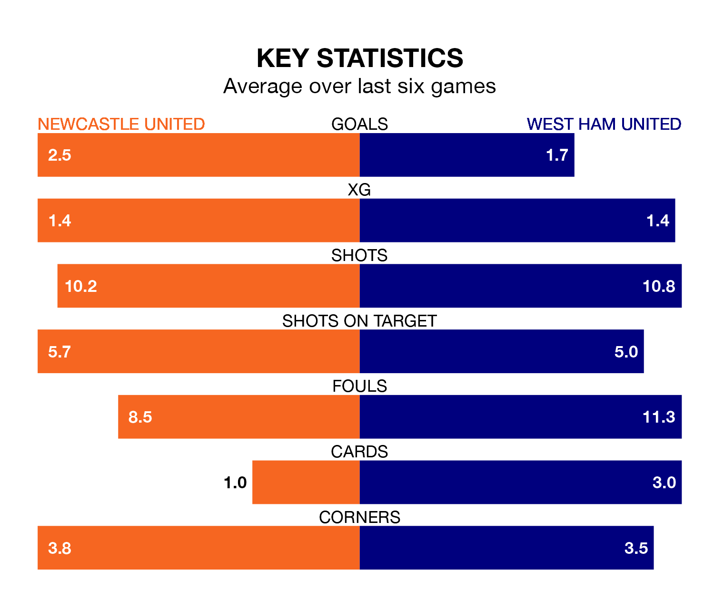

Newcastle United are heavy favourites to keep all three points at home in Saturday lunchtime's kick-off against West Ham United.
The Magpies, who sit 10th in the Premier League with 28 games played, are priced at 1.6 to seal victory at St. James' Park.
Despite sitting three places and four points ahead of them in the table, West Ham are 4.5 to win with *Betting Company*, while the draw is at 4.3.
With 59 goals in 28 games so far this season, Newcastle are scoring more than average in the league with 2.1 goals per game. But they are conceding more than average too, letting in 48 goals at a rate of 1.7 per game.
West Ham, meanwhile, are average scorers, with 1.6 goals per game. They have conceded 1.7 goals per game.
In the last 10 years, Newcastle and West Ham have played each other on 18 occasions. Newcastle won nine of them, West Ham five, and they drew four times.
On average, the Magpies scored 1.8 goals and the Hammers 1.4 in those matches.
Their last meeting was on October 8, when they played out a 2-2 draw.
Newcastle United's Kieran Trippier is the league's most creative player, racking up 10 assists in 25 appearances so far this season.
For West Ham United, Vladimír Coufal and James Ward-Prowse have set up the most goals, having laid on seven assists apiece to date.
The Magpies are in mixed form in the Premier League, with two wins and two draws from their last six games.
And also with two wins and two draws over that period, the Hammers' form is identical – they have both taken eight points from 18.
Newcastle's last match was on March 11, a 3-2 loss against Chelsea, with Alexander Isak and Jacob Murphy getting the goals for the Magpies.
West Ham drew 1-1 with Aston Villa last time out, on March 17, with Michail Antonio on the scoresheet.
Updated: 10:19 (UTC), 22/03/24